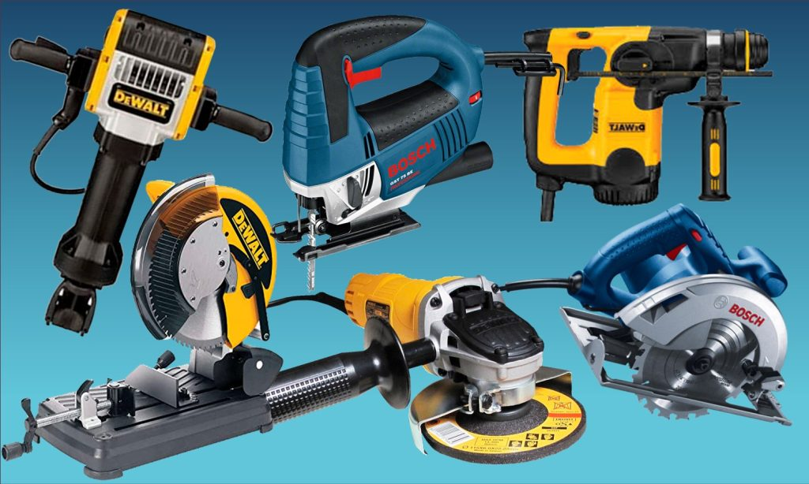

Herramientas eléctricas

Las herramientas eléctricas son muy útiles porque permiten realizar tareas de manera más rápida y eficiente que las herramientas manuales. Estas herramientas funcionan con corriente eléctrica, ya sea a través de un cable o de baterías recargables.
1. Taladros
- Taladro percutor: Ideal para perforar en materiales duros como ladrillo, hormigón o piedra. Su función de percusión permite que el taladro golpee el material mientras gira, lo que facilita la perforación de superficies más resistentes.
- Taladro de impacto: Similar al percutor, pero con una acción más fuerte y rápida. Es ideal para trabajos que requieren más potencia, como perforar metal o materiales muy duros.
- Taladro inalámbrico (a batería): Este tipo de taladro es muy versátil y portátil, ideal para trabajos donde no se tiene acceso a una fuente de energía directa. Usualmente viene con diferentes velocidades y controles de torque.
- Taladro de columna: Es una máquina estacionaria que se utiliza principalmente en talleres. Tiene más precisión y permite perforaciones exactas a diferentes profundidades y ángulos.
2. Amoladoras
- Amoladora angular: Es una herramienta eléctrica de uso versátil, ideal para cortar, lijar o pulir metal, piedra, cerámica, ladrillo o concreto. Se utilizan discos abrasivos o de corte, dependiendo de la tarea. Las amoladoras se usan comúnmente en trabajos de construcción y demolición.
- Amoladora de banco: Está fija en un banco de trabajo y se utiliza principalmente para afilar y pulir herramientas, así como para limpiar piezas metálicas.
3. Sierras eléctricas
- Sierra circular: Es una herramienta potente para cortar madera, plástico, metal y otros materiales. Se utiliza para cortes rectos y rápidos, y es especialmente útil para cortar tablas largas.
- Sierra de calar (sierra de vaivén): Tiene una hoja que se mueve hacia arriba y hacia abajo, permitiendo cortes curvos y rectos en madera, metal, plástico, etc. Es muy versátil y se utiliza en trabajos de carpintería y bricolaje.
- Sierra de inglete: Se utiliza para hacer cortes precisos y en ángulo en madera y otros materiales. Es comúnmente utilizada en la carpintería para cortar molduras, marcos o listones de madera.
- Sierra de cinta: Ideal para cortar materiales de forma precisa y detallada, se utiliza para cortes curvos o rectos en materiales como madera o metal. Es común en talleres de carpintería y metal.
4. Atornilladores eléctricos
- Atornillador inalámbrico: Similar a un taladro, pero diseñado específicamente para atornillar y desatornillar. Su ventaja es la rapidez y la comodidad de no tener que hacer esfuerzo físico. Son ideales para ensamblar muebles o reparar dispositivos.
- Destornillador de impacto: Está diseñado para atornillar a alta velocidad y con un par de torsión muy fuerte. Es útil cuando se necesita apretar tornillos grandes o cuando la fuerza manual no es suficiente.
5. Lijadoras eléctricas
- Lijadora orbital: Tiene una base rectangular u ovalada que realiza movimientos circulares. Es ideal para lijar superficies planas, como mesas, estanterías o puertas, y para acabados finos en madera o metal.
- Lijadora de banda: Utiliza una banda abrasiva que gira en un bucle continuo, ideal para trabajos que requieren lijar grandes superficies de forma rápida y efectiva. Es comúnmente usada en madera.
- Lijadora excéntrica: Combina el movimiento orbital con el movimiento excéntrico, lo que permite realizar un lijado mucho más fino y suave, ideal para trabajar en superficies delicadas.
6. Serras de mesa
- Sierra de mesa: Es una herramienta estacionaria que tiene una hoja circular montada en una mesa. Es perfecta para realizar cortes precisos y rectos en madera y otros materiales. Se usa comúnmente en carpintería y proyectos de bricolaje más grandes.
7. Aspiradoras industriales
- Aspiradora de taller o industrial: Estas aspiradoras están diseñadas para recoger polvo y escombros generados durante trabajos de carpintería, demolición o construcción. A menudo tienen mayor potencia que las aspiradoras domésticas y están diseñadas para recoger materiales más gruesos.
8. Soldadoras eléctricas
- Soldadora de arco: Utiliza electricidad para generar un arco eléctrico que funde los materiales metálicos, lo que permite unir piezas de metal. Es ideal para trabajos de construcción, reparación de vehículos, entre otros.
- Soldadora MIG: Utiliza un gas protector para evitar la oxidación mientras se realiza la soldadura. Es más fácil de usar para quienes están comenzando a soldar.
9. Sierras de sable
- Sierra de sable: Es una herramienta portátil que tiene una hoja de sierra de vaivén. Se utiliza principalmente para cortar tuberías, madera y materiales de construcción de forma rápida, pero no es adecuada para cortes muy precisos. Se usa en trabajos de demolición o reformas.
10. Cepillos eléctricos
- Cepillo eléctrico: Se utiliza para alisar, nivelar o darle forma a superficies de madera. Es útil para trabajos de carpintería, como el lijado o el suavizado de una tabla o pieza de madera.
11. Pistolas de calor
- Pistola de calor eléctrica: Genera aire caliente para derretir materiales, como pintura, adhesivos o para doblar plástico. También se utiliza para trabajos de descongelación, soldadura o desinfección.
12. Fresadoras eléctricas
- Fresadora: Es una herramienta eléctrica que permite cortar, moldear y alisar materiales duros como la madera o el metal. Se utiliza especialmente en carpintería, ebanistería y trabajos de precisión.
13. Cortadoras eléctricas de azulejos
- Cortadora de cerámica: Esta herramienta eléctrica se utiliza para cortar cerámica, piedra, mármol y azulejos. Usualmente tienen una hoja diamantada que corta a través de estos materiales duros.
Ventajas de las herramientas eléctricas:
- Rapidez y eficiencia: Permiten realizar tareas en menos tiempo y con mayor precisión.
- Menor esfuerzo físico: El trabajo se hace con la ayuda de la electricidad, lo que reduce el esfuerzo que se requeriría al usar herramientas manuales.
- Versatilidad: Muchas herramientas eléctricas son versátiles y tienen accesorios intercambiables que permiten realizar una variedad de tareas.
Consejos:
- Seguridad: Siempre usa equipo de protección adecuado (gafas, guantes, protección auditiva) cuando uses herramientas eléctricas.
- Mantenimiento: Asegúrate de mantener tus herramientas eléctricas bien cuidadas y revisadas para que tengan un buen rendimiento y duren más tiempo.
- Elección de herramientas: Dependiendo del tipo de trabajo, es importante elegir la herramienta adecuada para no forzarla y lograr un resultado óptimo.